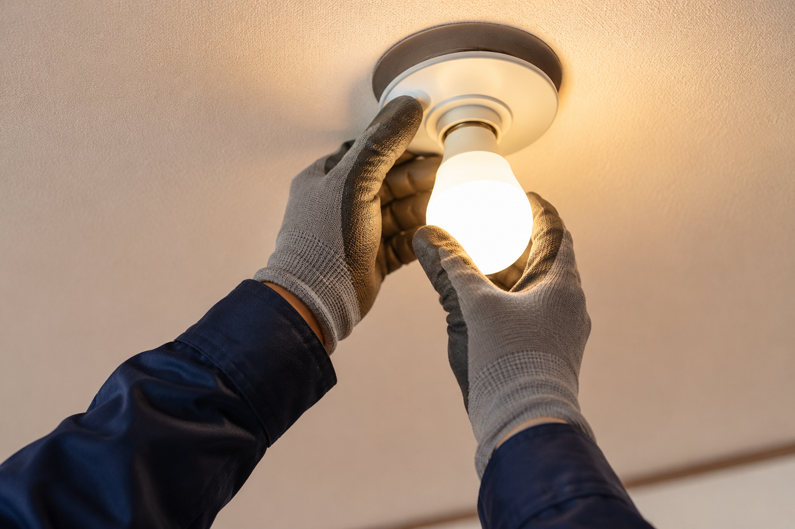

電球1個の交換から、
電気工事士が安全に解決します。
電球1個の交換から、スイッチ故障修理、コンセント増設まで。身近な電気の困りごと、電気工事士が安全に解決します。

こんなお悩み、ありませんか？
- 高所の電球が切れてしまい、自分での交換は怖くてできない…
- スイッチを押しても照明が点かない、故障してしまったみたい…
- ここに新しくコンセントを増やして、延長コードをすっきりさせたい…
そんなご家庭の電気の困りごとは、地域密着の「とよサポ」がすっきり解決します。
「電球1個だけの交換を頼むのは申し訳ない…」と遠慮される必要はまったくありません。
電球交換はもちろん、第二種電気工事士の国家資格を持つプロが、故障したスイッチの修理やコンセントの交換・増設まで、安心安全にしっかりと対応いたします。
とよサポが選ばれる2つの理由
電球交換だけでも大歓迎。高所の作業もお任せください
- 「電球1個だけの交換」でも快く来てほしい方
- 階段や吹き抜けなど、足場が悪く高所の電球交換が怖くてできない方
- 照明器具本体を新しく丸ごと交換・設置してほしい方
電球1個から喜んでお伺いいたします
「たったこれだけの依頼で呼ぶのは悪い気がする…」と悩まれる必要はありません。とよサポでは、電球1個の交換から喜んで対応いたします。特に高齢者の方や女性の方にとって、脚立に乗って行う高所の電球交換は転倒や落下の危険が伴い大変危険です。ぜひ私たちにお気軽に作業をお任せいただき、安全で明るいお部屋を取り戻してください。
照明器具の交換・引っ掛けシーリング設置も対応
電球の交換だけでなく、「部屋の雰囲気を変えたいので照明器具ごと最新のLEDシーリングライトに交換したい」「天井の引っ掛けシーリングを新しく取り付けたい」といった作業も、丁寧に行います。
スイッチ故障の修理・コンセント増設など電気工事もお任せ
- 壁のスイッチが陥没した、押しても反応しなくなった方
- 家電が増えたので、部屋の適切な場所にコンセントを増設したい方
- 電気工事のことは有資格者のプロに安全・確実に施工してほしい方
第二種電気工事士の有資格スタッフが対応するから安心
コンセントの増設やスイッチの内部配線の交換など、壁の内側の配線を扱う作業は、安全と法律の関係上、国家資格である「電気工事士」の資格が必須となります。とよサポには有資格のスタッフが在籍しているため、無資格業者による火災などの危険な工事を回避し、徹底的に安全な施工をお約束します。
スイッチ故障修理・コンセント増設も一気に解決
「スイッチがカチッと戻らなくなった」「コンセントのカバーが割れてしまって危ない」「ここにコンセントがあれば便利なのに…」といった日常の小さな電気の悩みも、すべてお任せください。配線の修理から安全なコンセント増設まで一挙に対応いたします。
料金のご案内
※高所作業の場合は別途お見積りとなります。5,500円（税込）〜
※壁の裏の構造や配線状況、増設箇所までの距離などにより料金が変動いたします。
※お見積りは無料ですので、まずはお気軽にご相談ください。
※現地調査が必要な場合は3,300円（税込）がかかります。ただしご成約の場合は費用は発生いたしません。
※下関市内は出張費（エリア料金）無料です。 その他の詳しい料金表を見る
ご利用の流れ
- 1
お問い合わせ
お電話またはLINEにて、「電球を替えてほしい」「スイッチが壊れた」「コンセントを増やしたい」などとお伝えください。状況を確認します。
- 2
現地確認・お見積り
作業内容や環境を確認し、明確なお見積りをご提示します（電球の交換など、一部の軽微な作業は現地調査を行わずに直接お電話等でお見積りできる場合もございます）。
- 3
プロによる安全な作業
お見積りに納得いただけましたら作業日程を決定し、電気工事士資格を持つスタッフが安全第一で丁寧に施工いたします。
- 4
動作確認・お支払い
電球が正しく点灯すること、スイッチやコンセントが安全に機能することを確認します。お客様にご確認いただき、問題がなければお支払いとなります。